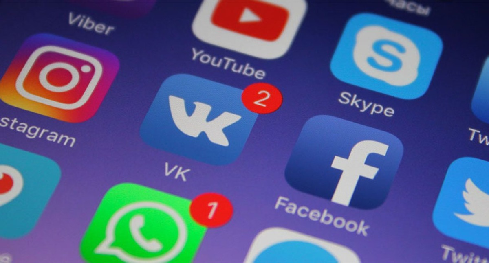

// разметка для нашего меню
Social networking it's a convenient way to keep in touch with foreign friends and good possibility to develop cooperation.
It's common knowledge that social networking has got enormous popularity nowadays. It's hard to find a person who doesn't have account in Facebook, Whatsapp Viber. It's a rapid and convenient means of communication. And it makes it really easy to stay in touch with foreign friends. Besides usual messages and images, allow exchanging audio and video messages with each other. Though, social networks have some drawbacks too. They can't be compared with live communication after all. And sometimes the image created by a person in Internet space can differ from a real one.
